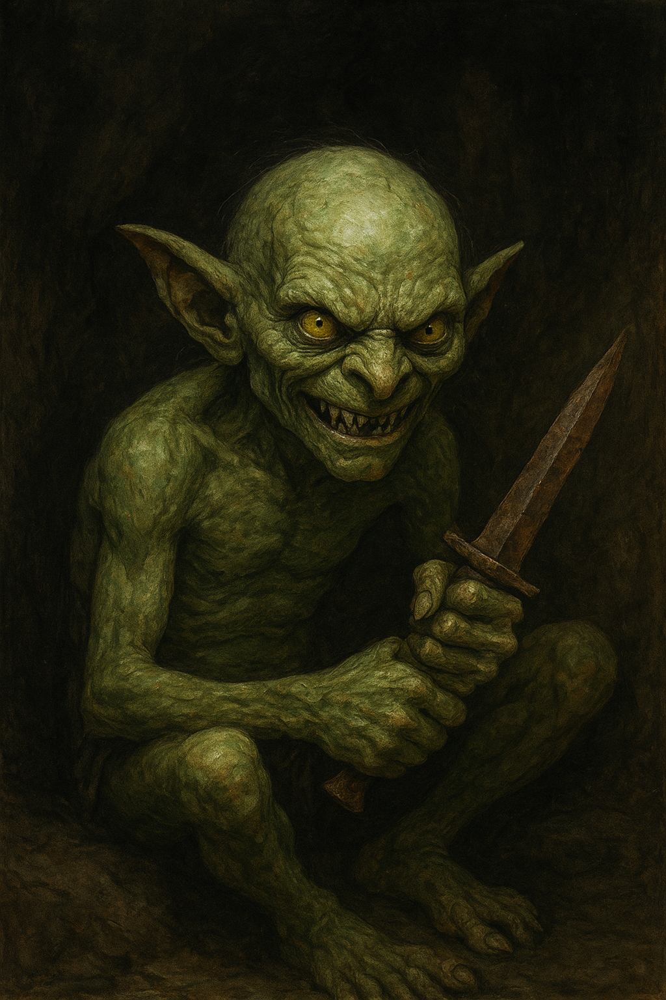

Der Goblin fährt herum, seine knochigen Finger umklammern einen rostigen Dolch.
Ein fauchendes Grinsen verzerrt sein Gesicht, er hat mich gesehen.

Der Goblin spuckt auf den Boden, der Dolch in seiner Hand zittert vor Gier, oder Wut.
Meine Taschen sind leer: kein Silber, kein Gold, nur das was ich am Leib trage.
Doch sein Blick huscht dorthin, wo ich herkam.
Soll ich bluffen, ihm von einem "versteckten Schatz" am alten Pfad erzählen oder kämpfen, mit dem Risiko,
dass seine Klinge schneller ist als meine Fäuste?
Die Zeit drängt, der Wald scheint näher zu rücken.